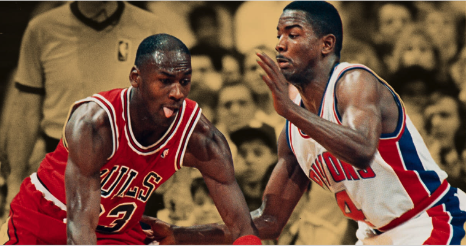

Especially in one-on-one situations and in scenarios where you need to create space, dribbling is crucial. You will almost always be contested when you have the ball, and the defense will pressure you until you lose control of the ball. To prevent this from happening, you need to work on being able to dribble the ball with ease and confidence. Some tips to make you a proficient ball-handler are the following:
Rather than trying to learn flashy moves from the get-go, begin by working on the fundamental dribbles, such as the crossover, btl's (between the legs), and behind the back. With these mastered, you are already better than the majority. From here on, create and visualize combinations using the basic dribble moves you have mastered, and with these, you can get by any defense with ease.

Back to Home